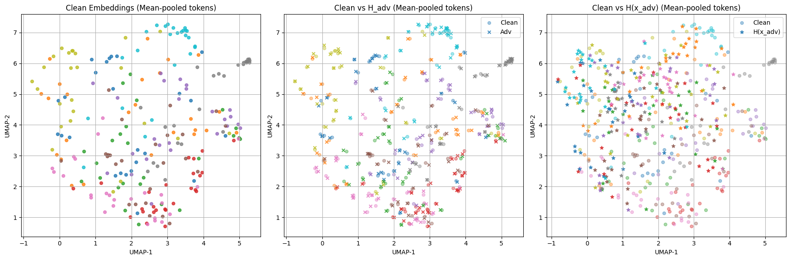
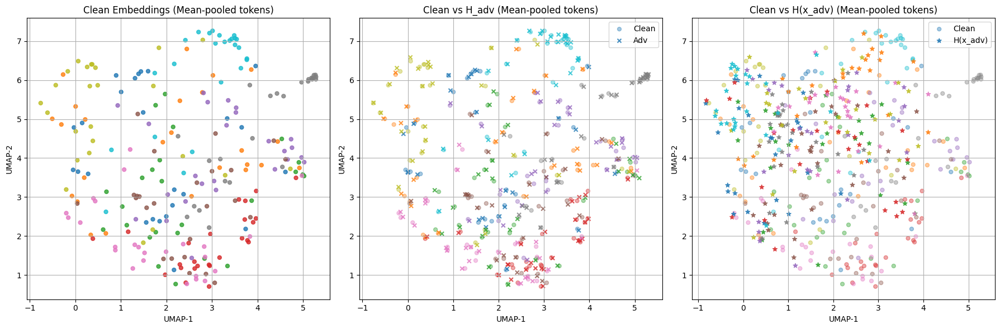

| Understanding Adversarial Attacks in Feature Space | |||
| Sandra Luo | |||
| Final project for 6.7960, MIT | |||
Summary
We study how adversarial attacks propagate through a neural network and alter its feature activations using sparse autoencoders. [Code here]
Introduction
Adversarial examples expose a persistent vulnerability in modern neural networks: small input perturbations can induce confident misclassifications despite being imperceptible to humans. While much prior work studies these attacks at the input or output level, much less is known about how adversarial perturbations propagate through the network’s internal representation space, and how they interact with the latent features the model relies on.
Recent progress in feature-level interpretability, especially through sparse autoencoders (SAEs), has made it possible to examine internal representations in terms of human-interpretable feature directions. At the same time, theoretical work such as (Stevinson et al. 2025) suggests that adversarial vulnerability may be caused by superposition, the phenomenon where multiple concepts share overlapping subspaces, leading to interference between non-orthogonal features (Elhage et al. 2022). However, these analyses have been studied mainly in simplified or artificially constrained settings, leaving it uncertain whether similar mechanisms emerge in naturally trained networks.
In this blog, we explore how adversarial perturbations alter a model’s feature activations and whether their effects align with superposed directions discovered by sparse autoencoders. By analyzing linear and nonlinear manifold geometry, drift patterns, and the behavior of specific feature groups under attack, we hope to characterize the pathways through which adversarial perturbations influence internal representations. This offers insight into whether interpretability tools can reveal structural reasons for adversarial vulnerability.
To make this concrete, we investigate the following questions:
Do adversarial attacks exploit superposed feature directions uncovered by sparse autoencoders?
How do adversarial perturbations manifest in/propagate through the feature space?
Background
A prominent theme in adversarial robustness is the geometric interpretation of adversarial perturbations. Many analyses frame adversarial examples as small input displacements that cross nearby decision boundaries in high-dimensional spaces, such as using codimension and manifold geometry or non-robust features to explain why small perturbations can induce large semantic errors (Khoury and Hadfield-Menell 2018), (Ilyas et al. 2019).
Recent work has examined how adversarial perturbations interact with the internal structure of learned representations. (Stevinson et al. 2025) propose that adversarial vulnerability may arise from superposition. Their theoretical analysis shows that when a model must represent more features than available dimensions—such as under an artificial bottleneck—interference between these directions creates fragile decision boundaries, and optimal adversarial perturbations tend to align with these interference directions. They validate this mechanism using toy models and bottlenecked Vision Transformers on CIFAR-10.
Sparse autoencoders (SAEs) can also help with understanding the structure of internal representations. Prior work (Cunningham et al. 2023) demonstrates that SAEs can disentangle latent directions and expose feature-level structure, often revealing the presence of superposition in large neural networks. Because SAEs explicitly aim to recover meaningful or approximately disentangled directions from hidden activations, they are well suited for examining how perturbations affect specific latent features.
To understand the activation space’s representation geometry, we use tools such as PCA, UMAP, and drift-based feature analyses. PCA captures linear variance directions in activation space, UMAP reveals nonlinear topological structure, and feature-wise drift matrices highlight how individual features change under perturbation. We use these complementary techniques to analyze the propagation and structure of adversarial effects in latent space in a more comprehensive manner.
We now briefly review the machine learning techniques relevant to our analysis.
Projected Gradient Descent
Projected gradient descent, or PGD, is an adversarial attack that aims to modify a given input image at a near-imperceptible level, but enough to make the model misclassify it. The idea is to optimize small perturbations \(\delta\) at the pixel level by maximizing the model’s loss function
\[\max_{\|\delta\| \le \varepsilon} \mathbb{E}_{(x, y) \in D}[L(\theta,x+\delta,y)]\]
This is done iteratively:
\[\delta_{t+1} = \Pi_{\|\delta\| \le \varepsilon} \left( \delta_t + \alpha \text{ sign} \left( \nabla_x L(\theta,x+\delta,y) \right) \right)\]
with hyperparameters \(\alpha\) and \(\varepsilon\).
PGD is considered to be one of the strongest first-order adversaries (Madry et al. 2018) and serves as the foundation for many subsequent adversarial attack methods, including variants inspired by Carlini and Wagner (Carlini and Wagner 2017) and many robustness studies (Raghunathan, Steinhardt, and Liang 2018; Athalye, Carlini, and Wagner 2018; Tramèr et al. 2018). It is also the default attack in much of the adversarial robustness literature because it is reliable, simple, and closely approximates the worst-case \(\ell_p\) perturbation.
PGD performs best in settings with differentiable input space, bounded Lipschitz behavior, and continuous-valued features, where gradient-based optimization can reliably ascend the loss landscape.
Sparse autoencoders
Sparse autoencoders (SAEs) have recently become a very popular tool for interpreting the internal representations of neural networks. Unlike classical autoencoders, which compress activations into dense latent vectors, SAEs expand the latent space to have many times more dimensions than the original activation, and enforce a sparsity penalty so that only a few of those dimensions activate for a given input. The encoder of the SAE computes the sparse code
\[z = \text{ReLU}(Wh+b)\]
and the decoder aims to reconstruct the original activation \(h\) from the sparse code:
\[\hat{h}=W^Tz\]
The weights of the decoder and encoder are often tied for more disentangled features.
SAEs were introduced in the context of mechanistic interpretability by (Cunningham et al. 2023), and further developed by subsequent work for their ability to extract meaningful semantic features from large models.
Sparse autoencoders are particularly effective at exposing superposition: because each latent feature corresponds to a direction in the model’s representation space, they can reveal how concepts mix or interfere through their activations.
Experiment
Overview
We opted to investigate PGD on vision models for the following reasons:
Vulnerability: Vision models are more vulnerable to imperceptible, pixel-level perturbations due to smooth and high-dimensional input spaces.
Continuity: Images satisfy PGD’s constraints well, unlike discrete domains such as text.
Interpretability: Adversarial attacks on inputs are easy to visualize in the vision space, allowing for better intuitive understanding of perturbations and its results on the activation space.
To understand how adversarial attacks act in the feature space, we ran two experiments:
perturb on \(x\) \(\rightarrow\) impact on \(h=h(x_{adv})\)
perturb on \(h\) \(\rightarrow\) resulting \(h_{adv}\)
Setup
Base Model and Dataset
We employed OpenAI’s pretrained CLIP-ViT-B-32 vision encoder and added a linear classification head to classify images from CIFAR-10.
The main reason we used CLIP-ViT-B-32 was because it had a pre-trained sparse autoencoder on HuggingFace (cannot train our own due to GPU limitations). We could not find a corresponding sparse autoencoder for larger models such as CLIP-ViT-B-16.
To most directly study PGD attacks and compare our results in a cleaner way with (Stevinson et al. 2025), we used the supervised task of classifying CIFAR-10 for its well-defined training objective.
The classification head was trained on CLIP embeddings with the following hyperparameters:
Optimizer: Adam, 1e-3 learning rate
Loss function: Cross Entropy Loss
Epochs: 10
Other than normalization transforms for CIFAR-10, no other augmentations were applied to the dataset.
PGD
Our initial PGD attack employed the following parameters for both objectives (a) and (b):
Loss function: Cross Entropy Loss during classification
\(\varepsilon = 0.1\)
\(\alpha =\) 1e-2
Steps = 40
These hyperparameters proved quite effective for perturbing the input, increasing the loss magnitude by an average of \(29.8\), but did not have a significant effect on the loss when perturbing \(h\).
Our initial hypothesis was that gradients in the activation space would spike or go off-manifold if not restricted enough, but our experiments showed the opposite—both the average normed difference between \(h\) and \(h_{adv}\) over all patches, as well as the average loss difference, was much larger when we perturbed the input rather than the hidden activation.
To improve the effectiveness of PGD wrt. \(h\), we modified \(\alpha\) and \(\varepsilon\) to scale with the magnitude of the activation space:
\[\alpha_{h}=\alpha \cdot \|h\|_{\text{RMS}}\] \[\varepsilon = \varepsilon \cdot \|h\|_{\text{RMS}}\]
where \(h \in \mathbb{R}^{50 \times 768}\) (the number of tokens + CLS token1 \(\times\) dimension of the hidden space).
The new hyperparameters were able to improve the magnitude of the loss function by an average of \(7.4\) when perturbing wrt. \(h_{adv}\), which is relatively low but high enough for the model to misclassify.
Sparse autoencoder
We used Prisma Multimodal’s pre-trained sparse autoencoder trained on the residual layer of the 11th transformer block, with the following architecture:
Input Dimension: 768
SAE Dimension: 49,152 (x64 expansion factor)
Sparsity: 1,408
Activation Function: ReLU
Context Size: 50 tokens (CLS included)
No additional fine-tuning was done.
For each hidden vector, we apply a layer norm function before feeding into the sparse autoencoder.
Results
For all 5000 images in the CIFAR-10 dataset, we:
Extracted the clean activations \(\mathbf{h}\) from the output of the residual block in layer 11.
Computed sparse autoencoder features using the normalized activations, \(\mathbf{\phi(\textbf{layer norm}(h))}\).2
Ran PGD wrt. \(h\) and extracted the perturbed activations \(\mathbf{h_{adv}}\).
Computed sparse autoencoder features of perturbed activations \(\mathbf{\phi(\textbf{layer norm}(h_{adv}))}\).
Ran PGD wrt. the input \(x\) and extracted activations of the perturbed input \(\mathbf{h(x_{adv})}\).
Computed sparse autoencoders features of perturbed input activations \(\mathbf{\phi(\textbf{layer norm}((h(x_{adv}))}\).
For each type of activation \(\{h, h_{adv}, h(x_{adv})\}\) and CIFAR-10 class, we tracked the firing count of the 49,152 features for the following thresholds: \(\{1.0, 1.5, 2.0, 2.5, 3.0\}\).
We examine the behavior of the feature activations in the following section.
Semantic Feature Hunt
Ideally, the features that we evaluate in the activation space against perturbations should be semantically meaningful.
We first looked at the top-\(k\) most active features at high thresholds, but our analysis showed that these features exhibit strong, ubiquitous activation across all classes, offering little semantic value. We therefore revised our criteria to better uncover semantic features.3
Intuitively, semantic features should:
Fire with decently high magnitude and relatively frequently over all tokens, but also be
Somewhat unique to each class, as this is how the classifier categorizes CIFAR-10. Features that fire all the time provide no useful information for the model to make a classification decision.
We set this as our two assumptions for identification. Our data collection process already takes (a) into consideration, so our objective in this section is to eliminate distractor features that always fire for every class.
We first compute firing counts for each feature over sliding windows of thresholds (from the \(k\)-th to the \(k+50\)-th), evaluated locally within each class to increase the chance of capturing class-specific patterns. We then aggregate and deduplicate these results to assess the overall uniqueness of each feature.
Averaging the following proportion
\[\frac{\text{\# unique features}}{\text{baseline feature count}}\]
over all thresholds (excluding the \(3.0\) threshold, which seems to contain mainly noise features), we find that the overall highest proportion of unique features lie in the \(100\)-th to \(200\)-th most common feature range. The following figure shows the distribution within this range:
We find that there are three ranges in this chart where the uniqueness meets the baseline4: \[\{(110, 115), (165, 170), (185, 190)\}\]
We collect all feature indices within this range and perform the following calculations to isolate semantic features based on uniqueness:
Denote the feature count of a given feature \(f\) for class \(i\) as \(f_i\). For each feature and thresholds \(\{1.5, 2.0, 2.5 \}\)5 , we calculate a distance matrix \(L \in \mathbb{R}^{10 \times 10}\) where, \(L_{ij}\) is \(\|f_i-f_j\|\).
For each matrix \(L\), calculate a thresholded density ratio
\[d=\frac{1}{|L|} \sum_{i,j} \left( |L_{ij}| < \tau \right)\]
for \(\tau = \tau_{\text{scale}} \cdot \max(|A|)\) where \(\tau_{\text{scale}}\) is a hyperparameter set to \(0.3\).
Since sparser matrices mean more uniform firing across classes, we aim to select features with denser matrices. We take the top 0.1 most dense scores across thresholds and take the union of the resulting features.
Below are the indices of our final set of 24 features:
features = [1064, 2420, 2642, 5167, 6847, 7636, 8709, 9028,
10216, 13978, 16979,19030, 20359, 21971, 24248, 25461, 25989,
29216, 29390, 31041, 40471,43948, 44551, 47241]We recognize that the sparse autoencoder almost certainly encodes more than 24 semantic features, and that some extracted features may not be semantic at all. Nonetheless, we restrict our analysis to this set for clarity and to enable deeper examination in the next section.
Analysis
Now that we have identified the most salient features in the activation space, we aim to examine the adversarial effects on them. To do this, we collected 25 images from each class in the test dataset, and evaluate their clean activations and features against their perturbed ones.
In general, we find that the perturbations of \(h_{adv}\) are random and do not encode any meaning, so we omit analysis in a few sections to save word/figure count. Visualizations of \(h_{adv}\) can be found in the code.
Principal Component Analysis
We perform PCA on clean activations to obtain a 2D projection and visualize adversarial drift. This provides a fixed set of axes capturing the natural geometry and dominant semantic directions of the model’s feature space. Projecting adversarial activations onto these same axes, we can directly observe whether adversarial perturbations push representations into new linear combinations of these semantic directions.
Thus, adversarial points deviating from clean projections along these axes is direct evidence that adversarial features arise from new superposed combinations of latent directions.
Conversely, low correlation between adversarial attacks and superposition would imply that adversarial and clean activations occupy the same manifold in PCA space; no new directions of variance appear.
Results
We find that the PCA visualizations are consistent with our predictions overall; the clean and perturbed tokens largely overlap, but the perturbed ones show a clear affine shift.
Class Centroid Drift
To visualize perturbation effects on classes relative to each other, we evaluate the centroid drift per class in PCA.
We observe a drift pattern similar to (Stevinson et al. 2025): perturbations pull most class centroids toward the global center, increasing superposition and weakening class separation.
UMAP
We further examine the effect of perturbations on inter-class relationships to gain insight into nonlinear warping in the activation manifold, which PCA cannot fully reveal as it captures only linear variance. By embedding clean and adversarial activations into a shared UMAP space, we can assess whether perturbations push representations off the clean manifold, blur class boundaries, or distort the topology of the space. If superposition contributes to adversarial vulnerability, we expect perturbed activations to exhibit reduced class separation and drift toward neighboring class regions.
Results
We evaluate two representations of individual images: the CLS token and the mean of \(7 \times 7\) patch tokens.
 

As noted, the perturbed tokens wrt. \(h\) are almost completely random and remain close to their original activations.
For the perturbed tokens wrt. input, the UMAP visualization generally support our prediction but with a few nuances. In the CLS-token view, the adversarial points collapse the class structure even more aggressively than expected: instead of drifting toward the center of the clean manifold, the perturbed tokens form a tight cluster away from the clean points along several distinct directions. This indicates a stronger form of manifold warping where perturbations push the CLS representation into alternative attractor regions rather than merely blurring existing class boundaries, as with the mean pooled tokens. However, the effect on the mean-pooled tokens is still strong, with perturbations drawing entire class clusters into others, as illustrated by the cyan and orange points migrating across the grid.
Additionally, we find that the CLS token is more adversarially vulnerable: this makes sense, as it serves as the model’s global aggregation vector and directly feeds the classifier head. As a result, even small changes in the input to propagate disproportionately into its representation.
From a superposition perspective, the CLS token is the semantic bottleneck of the model and thus integrating information from all tokens makes it especially vulnerable to perturbations that push it into mixed or unstable feature directions arising from superposition.
Drift Heatmap
Drift heatmaps provides a feature-level view of how activations change under perturbations, showing which features are most sensitive and which inputs are most unstable. This reveals drift patterns and feature-specific vulnerabilities that PCA and UMAP do not capture.
Our prediction for this visualization is more ambiguous as the heatmap should not show strong, blocky patterns per feature (which would indicate perturbations along feature directions rather than superposed combinations of them) nor random noise (which would indicate no correlation between features and perturbations).
We instead expect drift to be distributed across many features rather than concentrated in a small subset, consistent with the hypothesis that adversarial perturbations operate through shared subspaces. In this case, the heatmap should exhibit faint but coherent vertical patterns—signatures of correlated feature drift typically associated with superposition. Overall, we predict a low-rank, softly structured drift pattern reflective of distributed vulnerability.
Results
We once again evaluate image representation over both the CLS token and the mean of the patch tokens.

The CLS drift heatmap shows diffuse but correlated feature shifts, consistent with adversarial perturbations acting through superposed feature directions rather than single-feature failures. The structure is neither random nor sharply blocky, matching the expected low-rank drift signature of superposition. The mean drift heatmap is a little noisier but shares a similar pattern.
Conclusion
In this work, we investigated whether adversarial perturbations exploit the superposed feature directions recovered by sparse autoencoders in naturally trained models. While prior work demonstrated this connection in controlled, artificially bottlenecked settings, our goal was to test whether similar mechanisms arise in real activation spaces without synthetic architectural constraints.
Across linear manifold analyses (PCA), we observed that adversarial perturbations induce a good amount of drift in activation space but do not fully collapse class structure or generate large new variance directions. Nonlinear UMAP visualizations showed greater class overlap and topological distortion under perturbation, suggesting that adversarial effects may manifest more strongly along nonlinear manifold directions.
The drift heatmaps revealed distributed but low-rank shifts across features—patterns consistent with mild superposition. Overall, these findings suggest that adversarial perturbations do interact with superposed directions.
This study has several limitations: we focused on a single model layer, employed one SAE configuration, and evaluated a limited set of perturbations. Broader testing across architectures, layers, and attack families would help clarify the generality of the observed patterns. Additionally, the vision model used here employs a coarse 7×7 patching scheme, meaning each token corresponds to a large region of the input image. This limits how precisely we can interpret token-level activation patterns, and higher-resolution models may yield cleaner and more granular structure.
While not definitive, our results provide evidence that superposition may contribute to adversarial vulnerability in naturally trained networks, and they highlight sparse autoencoders as a useful tool for probing internal failure modes.
Future work could also explore the contrapositive direction: whether reducing superposition via adversarial training leads to more robust and interpretable representations.
Appendix
Appendix A: Feature frequency visualizations
Note the logarithmic scale.

Appendix B: PCA details
Math: Let \(H \in \mathbb{R}^{n \times d}\) denote the matrix of clean SAE activations, where each row \(h_i \in \mathbb{R}^{d}\) corresponds to a token-level hidden representation. We first compute the mean activation \[\mu = \frac{1}{n} \sum_{i=1}^{n} h_i,\] and center the data, \[\tilde{H} = H - \mathbf{1}\mu^{\top},\] where \(\mathbf{1} \in \mathbb{R}^{n}\) is the all-ones vector. The empirical covariance matrix is then \[C = \frac{1}{n}\, \tilde{H}^{\top} \tilde{H}.\]
PCA solves the eigenvalue problem \[C v_k = \lambda_k v_k,\] yielding orthonormal principal directions \(v_1, \dots, v_d\) with eigenvalues \(\lambda_1 \ge \lambda_2 \ge \cdots \ge \lambda_d\). Let \(V = [v_1 \; v_2] \in \mathbb{R}^{d \times 2}\) denote the top two principal components. Clean activations are projected into this semantic basis via \[Z_{\text{clean}} = \tilde{H} V.\]
To evaluate adversarial effects in the same PCA coordinate system, let \(H_{\text{adv}} \in \mathbb{R}^{n \times d}\) denote the corresponding matrix of adversarial activations. We center them using the clean mean, \[\tilde{H}_{\text{adv}} = H_{\text{adv}} - \mathbf{1}\mu^{\top},\] and project using the same PCA directions, \[Z_{\text{adv}} = \tilde{H}_{\text{adv}} V.\]
Comparing \(Z_{\text{clean}}\) and \(Z_{\text{adv}}\) reveals whether adversarial perturbations preserve the clean representation geometry or drive activations into new directions outside the clean semantic manifold.
Resulting PC1, PC2 vectors:
PC1: [ 0.4088726 0.01576076 -0.09443528 -0.15735169 0.13589688 -0.16522
-0.01098652 -0.40202352 -0.19093314 -0.21308999 0.18218072 -0.09359304
-0.32223454 -0.03792915 -0.1597165 0.01251047 0.15485823 -0.3362623
-0.06265952 -0.12845783 -0.08792782 -0.28028604 -0.12788834 -0.27660093]PC2: [ 0.20037031 0.02032769 0.05324512 0.36427462 0.12103343 -0.12917484
-0.00411543 0.20308389 -0.12150586 -0.26046842 0.06457995 0.37817797
0.21793342 0.42652634 0.33324564 -0.04308495 0.13319795 -0.15295534
-0.12122921 0.10722329 -0.17674664 0.13323678 0.03056798 -0.24885897]References
Athalye, Anish, Nicholas Carlini, and David Wagner. 2018. “Obfuscated Gradients Give a False Sense of Security.” In ICML.
Carlini, Nicholas, and David Wagner. 2017. “Towards Evaluating the Robustness of Neural Networks.” IEEE Symposium on Security and Privacy.
Cunningham, Hoagy, Aidan Ewart, Logan Riggs, Robert Huben, and Lee Sharkey. 2023. “Sparse Autoencoders Find Highly Interpretable Features in Language Models.” https://arxiv.org/abs/2309.08600.
Elhage, Nelson, Tristan Hume, Catherine Olsson, Nicholas Schiefer, Tom Henighan, Shauna Kravec, Zac Hatfield-Dodds, et al. 2022. “Toy Models of Superposition.” Transformer Circuits Thread.
Ilyas, Andrew, Shibani Santurkar, Dimitris Tsipras, Logan Engstrom, Brandon Tran, and Aleksander Madry. 2019. “Adversarial Examples Are Not Bugs, They Are Features.” https://arxiv.org/abs/1905.02175.
Khoury, Marc, and Dylan Hadfield-Menell. 2018. “On the Geometry of Adversarial Examples.” https://arxiv.org/abs/1811.00525.
Madry, Aleksander, Aleksandar Makelov, Ludwig Schmidt, Dimitris Tsipras, and Adrian Vladu. 2018. “Towards Deep Learning Models Resistant to Adversarial Attacks.” ICLR.
Raghunathan, Aditi, Jacob Steinhardt, and Percy Liang. 2018. “Certified Defenses Against Adversarial Examples.” In ICLR.
Stevinson, Edward, Lucas Prieto, Melih Barsbey, and Tolga Birdal. 2025. “Adversarial Attacks Leverage Interference Between Features in Superposition.”
Tramèr, Florian, Alexey Kurakin, Nicolas Papernot, Ian Goodfellow, Dan Boneh, and Patrick McDaniel. 2018. “Ensemble Adversarial Training: Attacks and Defenses.” In ICLR.
The CLS token is a special embedding added to the beginning of the input sequence that the model uses as a global summary representation for downstream classification.↩︎
Layer normalization ensures the SAE is invariant to activation scale, preventing it from encoding norm differences and encouraging it to learn features based on directional structure rather than magnitude.↩︎
Further details about calculations in this section can be found in the code.↩︎
More detailed graphs of feature frequency over these ranges can be found in the Appendix.↩︎
Thresholds 1.0 and 3.0 are mostly noise and thus dropped.↩︎